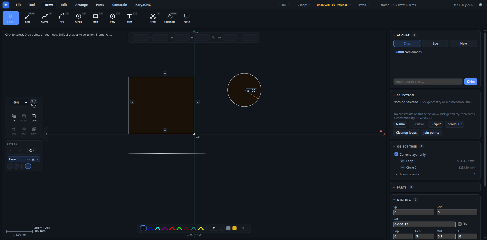

Panel AI Chat
Panel AI Chat ada di sidebar kanan. Memerlukan server AI bridge dan kunci API Anda sendiri (bring-your-own-key). Tidak ada kunci API yang dikirim bersama repositori.

1. Mengaktifkan AI chat
- Jalankan server MiniSketch:
node server/serve.js(http://localhost:8090). - Buka Settings ▸ AI chat dan isi:
- AI bridge URL — kosongkan jika diakses lewat server yang melayani MiniSketch (butuh HTTP, bukan
file://), atau isi mis.http://127.0.0.1:8090. - Google Gemini — centang bila memakai kunci Google Gemini API; biarkan kosong jika memakai endpoint OpenAI-compatible kustom di kolom AI API base URL.
- AI API key — kunci API Anda sendiri.
- AI model — bukan di Settings: pilih langsung dari dropdown model di panel AI Chat (klik 🔄 untuk memuat daftar model provider).
- AI reasoning level — pilih
Off,Low, atauNormaluntuk model yang mendukung penalaran. - Mode SVG (tanpa tools) — jika aktif, AI menghasilkan SVG mentah yang langsung diimpor ke kanvas daripada memanggil alat gambar satu per satu.
- AI agent rounds — berapa kali agen boleh looping sebelum jawaban akhir (default 4×).
- AI bridge URL — kosongkan jika diakses lewat server yang melayani MiniSketch (butuh HTTP, bukan
- Klik Apply di Settings.
- Buka panel AI Chat di sidebar kanan: pilih model atau klik 🔄 untuk memuat daftar model, gunakan 🖼 (atau paste/seret gambar) untuk Vision-to-sketch, ketik perintah, lalu klik Kirim. Tombol Fork menyalin percakapan ke cabang baru, dan Stop menghentikan respons yang sedang berjalan.
Keamanan: kunci API dikirim ke bridge dengan setiap permintaan dan tidak pernah disimpan oleh bridge (dilupakan saat berhenti). Kunci yang dibakar ke dalam source code bocor bersama source — tidak ada kunci di sini, Anda menyetel sendiri. CORS adalah allowlist (local file, localhost, LAN) sehingga halaman web acak tidak bisa mencuri kunci Anda.
2. Mode offline
Jika tidak ada server sama sekali, tab chat kembali ke mode offline: mem-parsing perintah sederhana Bahasa Indonesia / Inggris langsung, tanpa LLM yang diperlukan.
3. Contoh perintah
kotak 100x60 di 0,0— buat kotak 100×60 mm di koordinat 0,0.lingkaran diameter 50 di tengah— buat lingkaran di tengah kanvas.- Perintah lain sesuai dukungan parser offline atau model AI yang dikonfigurasi.
Geometri di worksheet tidak disentuh oleh operasi chat kecuali agen AI secara spesifik meminta perubahan dan Anda menyetujui.